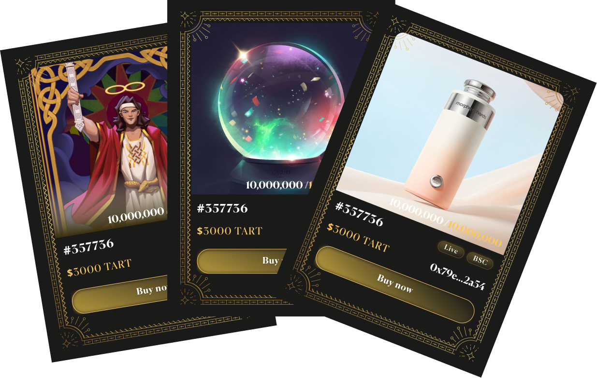

{{define "market"}}
<!-- Section NFT 2 -->
<div id="marketplace" class="container  space-top-3 space-bottom-lg-3 px-lg-10">
    
  <div class="row justify-content-lg-between align-items-lg-center">
     
    <div class="col-lg-6 order-lg-1 karma-star">
      <div class="pt-8 pb-lg-8">
        <!-- Title -->
        <div class="mb-5 mb-md-7 al-c">
          <h2 class="karma-y al-c">Karmarket is the Karma community's free trade hub.</h2>
          <p id="karmapi-p">Players can trade NFTs and in-game items with each other. Players can also purchase game collectibles and real-world products, such as tarot cards, crystal balls, magic wands, 
            bracelets, and other divination items.</p>
            <p id="karmapi-p">The universal currency in Karmarket is KART, the native token of Karma ecosystem.</p>
        </div>
        <!-- End Title -->
      </div>
    </div>

    <div class="col-md-6 order-md-2 mb-11 mb-md-0">
            <div class="position-relative">
              
              <!-- SVG Elements -->
            </div>
        </div>

     

    </div>
  </div>
  <!-- End NFT section 2-->
  {{end}}